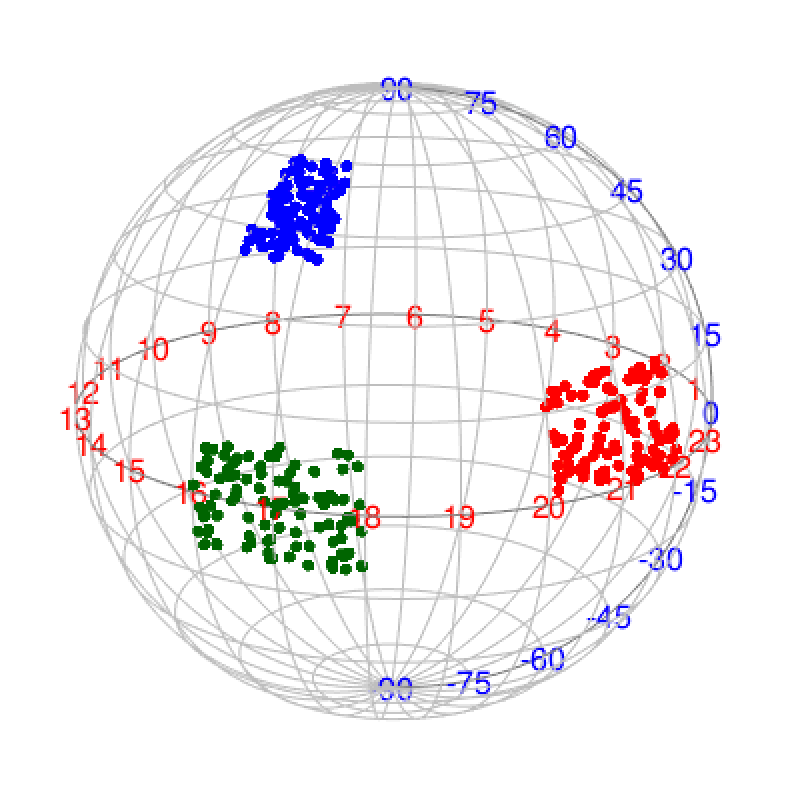
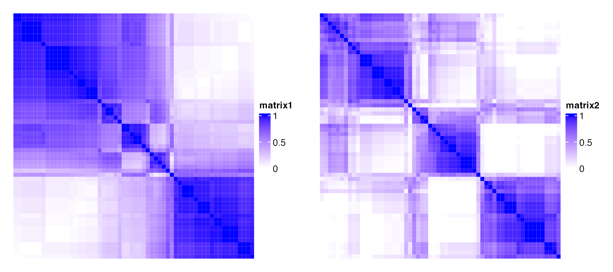
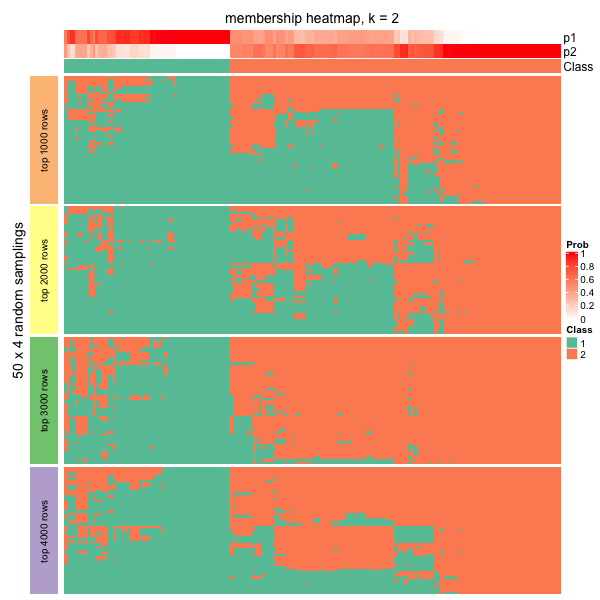
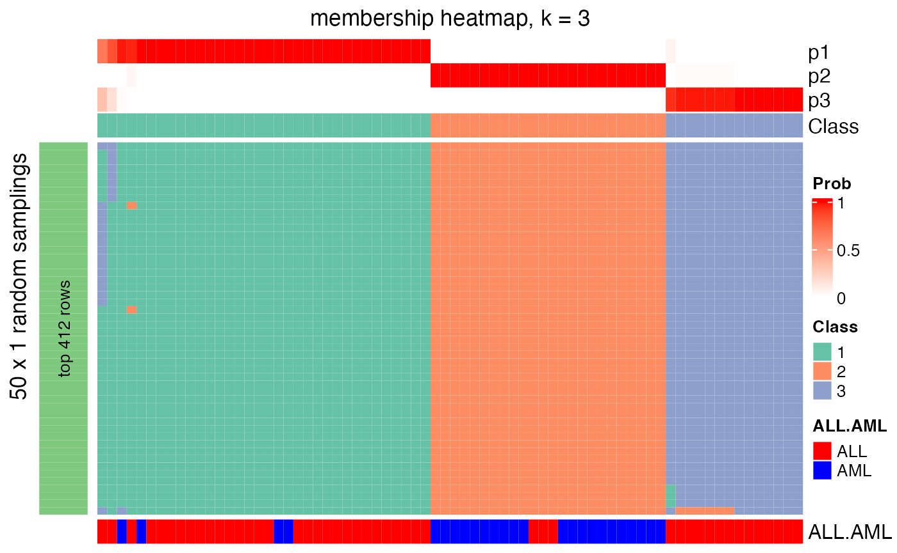

cola: A Framework for Consensus Partitioning
Zuguang Gu (z.gu@dkfz.de)
2024-02-27
Source:vignettes/cola_general.Rmd
cola_general.RmdIntroduction
Subgroup classification is a basic task in high-throughput genomic data analysis, especially for gene expression and DNA methylation data analysis. Mostly, unsupervised clustering methods are applied to predict new subgroups or to test the agreement with known annotations.
To test the stability of subgroup classifications, consensus clustering or consensus partitioning is always performed. It clusters repeatedly with a randomly sampled subset of data and summarizes the robustness of the clustering, finally, it gives a consensus classification of all samples.
Here we present the cola package which provides a general framework for consensus partitioning. It has the following advantages:
- It modularizes the consensus partitioning processes that various methods can be easily integrated into different steps of the analysis.
- It provides rich visualizations for interpreting the results.
- It allows running multiple methods at the same time and provides functionalities to compare results in a straightforward way.
- It provides a new method to extract features which are more efficient to separate subgroups.
- It generates detailed HTML reports for the complete analysis.
Following flowchart lists the general steps of consensus partitioning implemented by cola:

The steps are:
- Clean the input matrix. The processings are: adjusting outliers, imputing missing values and removing rows with very small variance. This step is optional.
- Extract a subset of rows with the highest scores. Here “scores” are calculated by a certain method. For gene expression analysis or methylation data analysis, \(n\) rows with the highest variance are used in most studies, where the “method”, or let’s call it “the top-value method” is the variance (by
var()orsd()). Note the choice of “the top-value method” can be general. It can be e.g. MAD (median absolute deviation) or any user-defined method. - Scale the rows in the sub-matrix (e.g. gene expression) or not (e.g. methylation data). This step is optional.
- Randomly sample a subset of rows or columns from the sub-matrix with probability \(p\) and perform partitioning on the columns of the matrix by a certain partitioning method, with trying different numbers of subgroups.
- Repeat step 4 several times and collect all the partitions.
- Perform consensus partitioning analysis and determine the best number of subgroups which give the most stable subgrouping.
- Apply statistical tests to find rows that show a significant difference between the predicted subgroups. E.g. to extract subgroup-specific genes.
- If rows in the matrix can be associated with genes, downstream analysis such as function enrichment analysis can be performed.
All the steps will be explained in detail in the following sections.
First, we load the cola package.
The input matrix
In most of the analysis tasks, the input matrix contains values of gene expression or DNA methylation (from methylation array or whole-genome bisulfite sequencing). If it is an expression matrix, rows correspond to genes, and if it is a methylation matrix, rows correspond to CpG sites. For both types of matrices, columns should always correspond to samples where subgroups are detected. More general, the input matrix can be any type of measurements as long as they represent in a form of a matrix, e.g. a matrix where rows are genomic regions and values are the histone modification intensities in the regions, measured from a ChIP-Seq experiment.
In following part of this vignette, we always call the matrix columns as “samples”.
Before performing consensus partitioning, a simple but important step is to clean the input matrix:
# code is only for demonstration
mat = adjust_matrix(mat)adjust_matrix() does the following preprocessing:
- Rows where more than 25% of the samples having
NAvalues are removed; - Use
impute::impute.knn()to impute missing data if there is any; - For each row in the matrix, it uses
adjust_outlier()(also provided by cola package) to adjust outliers. Values larger than the 95^th percentile or less than the 5^th percentile are replaced by corresponding percentiles. - Rows with zero variance are removed.
- Rows with variance less than 5^th percentile of all row variance (after removing rows with zero variance) are removed.
Some of the above steps are optional. For example, methylation matrix does not need to be adjusted for outliers because all the methylation values are already in a fixed data scale (0 ~ 1).
Basic usage
consensus_partition() performs consensus partitioning for a single top-value method and a single partitioning method. The major arguments for consensus_partition() are:
# code is only for demonstration
res = consensus_partition(mat,
top_value_method = "MAD",
top_n = c(1000, 2000, 3000),
partition_method = "kmeans",
max_k = 6,
p_sampling = 0.8,
partition_repeat = 50,
anno = NULL)-
mat: a data matrix where subgroups are found by columns. -
top_value_method: name of the method to assign scores to matrix rows. Later these scores are used to order and extract rows with top values. -
top_n: number of rows with top values used for partitioning. Normally we settop_nas a vector of different numbers. -
partition_method: name of the method for partitioning. -
max_k: maximal number of subgroups to try. It will try from 2 tomax_k. -
p_sampling: the fraction of thetop_nrows to sample. The sub-matrix withp_sample * top_nrows is used for partitioning. -
partition_repeats: times of partitioning with randomly sampled subset of data to perform. -
anno: a vector or a data frame which contains known annotations of samples. If it is provided, it will be drawn alongside with the predicted subgroups in the plot generated by downstream functions and it can also be tested for the correspondence to predicted subgroups.
Other arguments can be found in the documentation of consensus_partition().
To get a robust result from consensus partitioning, for a specific top-value method and a specific partitioning method, consensus_partition() tries different top_n and different number of subgroups. We found that different top_n might give different subgroups for some data sets, thus consensus_partition() pools results from different top_n and aims to give a general consensus subgrouping across different top_n. Later, we will introduce that the bias for top_n on subgrouping can be visualized by membership_heatmap() function.
In most cases, users might not be very sure which top-value method and which partitioning method is best for their dataset. The helper function run_all_consensus_partition_methods() is a convenient way to try multiple top-value methods and multiple partitioning methods simultaneously to see which combination of methods gives the best prediction of subgroups.
In run_all_consensus_partition_methods(), most of the arguments are the same as in consensus_partition(), except top_value_method and partition_method now accept a vector of method names and multiple cores can be set by cores argument.
# code is only for demonstration
rl = run_all_consensus_partition_methods(mat,
top_value_method = c("SD", "MAD", ...),
partition_method = c("hclust", "kmeans", ...),
cores = ...)
cola_report(rl, output_dir = ...)There are many functions in cola package that can be applied to rl to visualize and compare the results for all combinations of methods simultaneously.
cola_report() function can be applied on rl to generate a HTML report for the complete analysis, with all the plots and tables.
Top-value methods
Top-value methods are used to assign scores to matrix rows, later the scores are ordered and only the top \(n\) rows with the highest scores are used for consensus partitioning. The default top-value methods provided in the package are:
## [1] "SD" "CV" "MAD" "ATC"These top methods are:
-
SD: Standard deviation. -
CV: Coefficient of variance, defined assd/(mean + s0)wheres0is a penalty term which is the 10^th percentile of all row means to avoid small values dividing small values giving large values. -
MAD: Median absolute deviation. -
ATC: A new method proposed in cola package and it will be explained later in this section.
These methods can be used in consensus partitioning by providing the name to the top_value_method argument in run_all_consensus_partition_methods() or consensus_partition().
You can register a new top-value method by register_top_value_methods(). The value should be functions. For each function, it should only have one argument which is the matrix for analysis and it must return a vector with scores for rows. In the following example, the “max” method uses the row maximum as the row score and we also add the “QCD” method (quartile coefficient of dispersion) as a second method here.
register_top_value_methods(
max = function(mat) matrixStats::rowMaxs(mat),
QCD = function(mat) {
qa = matrixStats::rowQuantiles(mat, probs = c(0.25, 0.75))
(qa[, 2] - qa[, 1])/(qa[, 2] + qa[, 1])
})
all_top_value_methods()## [1] "SD" "CV" "MAD" "ATC" "max" "QCD"By default, the consensus partitioning functions run_all_consensus_partition_methods() uses all registered top-value methods, but still, you can explicitly specify a subset of top-value methods. To remove registered top-value methods, simply use remove_top_value_methods() by providing a vector of names.
remove_top_value_methods(c("max", "QCD"))
all_top_value_methods()## [1] "SD" "CV" "MAD" "ATC"The ATC method
Choosing the top rows in the matrix is important for the subgroup classification. In most cases, we extract the most variable rows which is defined by row variance. However, sometimes it won’t give you meaningful rows which are efficient for subgroup classification. When random noise in the data increases, e.g. for single-cell RNASeq data, the most variable genes are too weak to detect any stable subgroups.
If we think reversely, assuming there exist stable subgroups in the data, there must be groups of rows showing a similar pattern to support the subgrouping, in other words, rows in the same groups should have high correlations to each other. Thus, if we can get rows that more correlated to others, they are more strong to form a stable subgroup for the samples. According to this thought, we designed the ATC method (ability to correlate to other rows).
For row \(i\) in a matrix, \(X\) is a vector of the absolute correlation to all other rows, the ATC (ability to correlate to other rows) for row \(i\) is defined as:
\[ATC_i = 1 - \int_0^1F(x)\]
where \(F(x)\) is the CDF (cumulative distribution function) of \(X\).
In the following plot, the line is the CDF curve. ATC is the area above the CDF curve. It can be imagined that when row \(i\) correlates with more other rows, the CDF curve shifts more to the right, thus with higher ATC scores.
There can be scenarios when a large number of rows are correlated to each other only with very small correlation values. They will gain high ATC value due to a large number of rows (which corresponds to the left part of the red area in the above plot that is close to \(x = 0\)). To decrease such effect, the ATC definition can be slightly modified to:
\[ATC_i = (1 - \alpha) - \int_{\alpha}^1F(x^{\beta})\]
where now \(ATC_i\) is the red area only on the right of \(x = \alpha\). The coefficient \(\beta\) is the power added to the absolute correlations that it decreases more for the smaller correlations. By Default \(\alpha\) is set to 0 and \(\beta\) is set to 1.
Next, we perform a simulation test to show the attributes of the ATC method. A matrix with 160 rows, 100 columns with random values are generated as follows:
- 100 rows with a mean of 0. The covariance matrix is set to 0 and 1 on the diagonal;
- 10 rows with a mean of 0. The covariance matrix is set to 0.8 and 1 on the diagonal. This simulates high correlations but in a small group of rows;
- 50 rows with a mean of 0. The covariance matrix is set to 0.5 and 1 on the diagonal. This simulates intermediate correlations but in a large group of rows.
The top left figure in following is the heatmap for the random matrix, split by the three groups of rows. In the top right figure, they are ECDF curves of the correlation when calculating ATC scores. The bottom left figure is the ATC scores for all 160 rows and the bottom right figure is the standard deviation for the 160 rows.
All the 160 rows have a similar variance of 1 that they cannot be distinguished very well by using variance (bottom right figure). As a contrast, the rows with non-zero covariance have higher ATC values (the red and green points), even higher when the number of correlated rows increases (the green points, although the correlation value itself is intermediate, bottom left figure). This shows the ATC method can assign higher values for rows which correlate to more other rows.
ATC scores are calculated by ATC() function. By default it uses Pearson correlation. Users can register the ATC method with other correlation methods by, e.g.:
# code is only for demonstration
register_top_value_methods(
ATC_spearman = function(m) ATC(m, method = "spearman"),
ATC_bicor = function(m) ATC(m, cor_fun = WGCNA::bicor)
)Partitioning methods
Partitioning methods are used to separate samples into \(k\) subgroups where \(k\) is a known parameter for the partitioning. The default partitioning methods are:
## [1] "hclust" "kmeans" "skmeans" "pam" "mclust"
## attr(,"scale_method")
## [1] "z-score" "z-score" "z-score" "z-score" "z-score"These partitioning methods are:
-
hclust: hierarchical clustering + cutree. The parameters for callinghclust()anddist()are all defaults for the two functions, thus it is Euclidean distance with “complete” clustering method. -
kmeans: k-means clustering. -
skmeans: spherical k-means clustering, from skmeans package. -
pam: partitioning around medoids, from cluster package. -
mclust: model-based clustering, from mclust package. The clustering is based on the first three principle dimensions from the original matrix.
Similarly, you can register a new partitioning method by register_partition_methods(). The value should be functions with two arguments which are the input matrix and number of subgroups. There can be a third argument for the function which is ... used for passing more arguments from consensus_partition(). The function should only return a vector of subgroup/class labels or an object that can be imported by clue::cl_membership(). Please note the partition is applied on columns of the matrix and the number of unique levels of subgroup levels which are predicted by the partitioning method should not exceed \(k\).
Following example registers a partitioning method which randomly assigns subgroup labels to samples:
register_partition_methods(
random = function(mat, k) {
sample(letters[1:k], ncol(mat), replace = TRUE)
}
)Here the subgroup labels can be in any types (numbers, characters). They only need to be different for different classes. These labels will be re-coded with numeric indices internally (i.e. 1, 2, 3, …).
To remove a partitioning method, use remove_partition_methods():
remove_partition_methods("random")The built-in hclust method only uses Euclidean distance with “complete” clustering method, It is easy to define another hclust method:
# code is only for demonstration
register_partition_methods(
hclust_cor = function(mat, k) cutree(hclust(as.dist(1 - cor(mat))), k)
)Following code registers SOM and NMF partitioning methods:
# code is only for demonstration
library(kohonen)
register_partition_methods(
SOM = function(mat, k, ...) {
kr = floor(sqrt(ncol(mat)))
somfit = som(t(mat), grid = somgrid(kr, kr, "hexagonal"), ...)
m = somfit$codes[[1]]
m = m[seq_len(nrow(m)) %in% somfit$unit.classif, ]
cl = cutree(hclust(dist(m)), k)
group = numeric(ncol(mat))
for(cl_unique in unique(cl)) {
ind = as.numeric(gsub("V", "", names(cl)[which(cl == cl_unique)]))
l = somfit$unit.classif %in% ind
group[l] = cl_unique
}
group
}
)
library(NMF)
register_partition_methods(
NMF = function(mat, k, ...) {
fit = nmf(mat, rank = k, ...)
apply(fit@fit@H, 2, which.max)
}, scale_method = "max-min"
)For these two methods, users can simply use register_SOM() and register_NMF() functions in cola package.
# code is only for demonstration
register_SOM()
register_NMF()In the code above, there is an additional argument scale_method for register_partition_method(). scale_method controls how to scale the matrix rows before partitioning if scaling is turned on consensus_partition() or run_all_consensus_partition_methods(). There are three possible values:
-
z-score: z-score transformation, which is(x - mean(x))/sd(x). -
max-min:(x - min(x))/(max(x) - min(x)), this ensures all the scaled values are non-negative. -
none: no scaling is performed.
The skmeans method
The skmeans method (the spherical k-means clustering) is powerful to detect subgroups where samples in the same subgroup show strong correlations. skmeans clustering uses cosine similarity and projects data points onto a unit hyper-sphere. As we have tested for many datasets, skmeans is very efficient to detect stable subgroups.

Consensus partitioning
For a given number of top rows \(n_i\), the corresponding matrix with top rows denoted as \(M_i\), a subset of rows with a probability of \(p\) are randomly sampled from \(M_i\) and a certain partitioning method is applied to it, generating a partition \(P_a\). In most cases, we have no prior knowledge of which \(n_i\) gives better results, thus, cola allows to try multiple \(n_i\) and pool partitions from all \(n_i\) together to find a consensus subgrouping, which also lets rows more on the top of the ranked list give higher weight for determining the final subgroups. Let’s assume top rows are tried for \(n_1\), \(n_2\), …, \(n_m\) and the randomly sampling is performed for \(N_s\) times, then, for a given number of subgroups \(k\) for trying, the total number of partitions is \(N_P = m \times N_s\).
Consensus matrix
The consensus matrix measures how consistent two samples are in the same subgroup and it can be used to visualize or analysis the stability of the subgrouping. The value \(c_{ij}\) in the consensus matrix is the probability of sample \(i\) and sample \(j\) in the same subgroup in all \(N_P\) partitions. It is calculated as:
\[c_{ij} = \sum_a^{N_P}I(s_{ia}, s_{ja})/N_P\]
where \(s_{ia}\) is the subgroup label for sample \(i\) in partition \(a\) and \(I()\) is the indicator function there \(I(x = y) = 1\) and \(I(x \neq y) = 0\).
Assuming there are stable subgroups in a dataset, which means, for any pair of samples \(i\) and \(j\) both in a same subgroup, \(c_{ij}\) is close to 1, and for any pairs in different subgroups, \(c_{ij}\) is close to 0, if the consensus matrix is visualized as a heatmap, samples in the same subgroup will be represented as a block in the diagonal of the heatmap.
Following two heatmaps visualize two consensus matrices. The left one shows less stability of subgrouping than the right one, while for the right one, there are three very obvious blocks in the diagonal that in each block, the corresponding samples are very likely to be in the same subgroup.
In the following two heatmaps, the right one corresponds to a more stable subgrouping.

Consensus subgroup labels
As long as we have a list of \(N_P\) partitions for a given subgroup number \(k\), we need to find a consensus partition based on all \(N_P\) partitions.Internally, cola package uses the clue package to construct the “partition ensemble” and predict the consensus subgroups. The “SE” method from clue::cl_consensus() function (please check the on-line documentation of this function) are used to calculate the consensus subgroup labels. The consensus subgroups are labels by integers (i.e. 1, 2, 3, …).
Adjust subgroup labels
The subgroup labels are assigned with numeric indices, however, in each partition, the assignment of the labels can be random, e.g. one same subgroup can be assigned with 1 in one partition, while in the other partition, it can be 2, but they are all identical for the sense of subgrouping. E.g. following partitions are all identical:
1 1 1 1 1 1 1 2 2 2 2 2 2
2 2 2 2 2 2 2 1 1 1 1 1 1
a a a a a a a b b b b b bThe subgroups are identical if switching the subgroup labels. This subgroup label adjustment is called the linear sum assignment problem, which is solved by the solve_LSAP() function in clue package. The aim is to find a mapping \(m()\) between two sets of labels to maximize \(\sum_i I(s_{1i}, m(s_{2i}))\) where \(s_1\) is the first label set and \(s_2\) is the second label set.
In following example, if the mapping is 1 -> 2, 2 -> 1, the second partition in following
1 1 1 1 1 1 1 2 2 2 2 2 # in partition 1
2 2 2 2 2 1 1 1 1 1 1 1 # in partition 2is adjusted to
1 1 1 1 1 1 1 2 2 2 2 2
1 1 1 1 1 2 2 2 2 2 2 2 # switch 1 <-> 2For the subgroups predicted by clue::cl_consensus(), the labels are additionally adjusted by the mean distance in each subgroup (calculated from the scaled data matrix), which means, the subgroup with label 1 always has the smallest mean intra-group distance.
This subgroup label adjustment is frequently used in cola to help the visualization as well as downstream analysis. E.g. for a specific combination of top-value method and partitioning method, the subgroup labels for different k are adjusted, and for the subgroups from different top-value methods and partitioning methods, the subgroup labels are also adjusted to make the label difference from different methods minimal.
Membership matrix
The \(N_P\) partitions are stored as a membership matrix where rows are partitions (grouped by top_n) and the subgroup labels in each partition are adjusted according to the consensus partition. Following heatmap is a visualization of all partitions and correspondence to the consensus partition for \(k = 2\). The p* annotation on top of the heatmap is the probability of being in subgroup \(i\) across all partitions.
In the following plot, actually we can see the samples in the middle tend to belong to the green subgroup (the group with label 1) for small top_n (e.g. top_n = 1000), while, when top_n increases, they go to the red subgroup (group label 2). Since the final subgroups are summarized from all top_n, the probabilities of the middle samples to be in either subgroup are close, which can also be observed from the probability annotation (p* annotations). This might indicate these are the subset of samples which are in the intermediate state between group 1 and group 2.

Determine the best number of subgroups
Consensus partitioning is applied with a specific number of subgroups (we term it as \(k\)). Normally, a list of \(k\) are tried to find the best \(k\). cola provides metrics to help to determine the best number of subgroups.
The get_stats() function returns statistics for all metrics mentioned below and select_partition_number() plots the statistics with the number of subgroups (an example is here).
Silhouette score
The silhouette scores measures how close one sample is in its own subgroup compared to the closest neighbouring subgroup. For sample \(i\), the mean distance to every subgroups are calculated, denoted as \(d_1\), \(d_2\), …, \(d_k\) (\(d_k\) is the mean Euclidean distance between sample \(i\) and every sample in subgroup \(s\)). The distance to the subgroup where sample \(i\) stays is denoted as \(d_a\) and the silhouette score is defined as:
\[silhouette_i = 1 - d_a/d_b\]
where \(d_b\) is the minimal distance excluding \(d_a\):
\[d_b = min_{j \neq a}^k d_j\]
Following plot illustrates how silhouette score is calculated for sample x_i.
The mean silhouette score from all samples is used to choose the best \(k\) where higher the mean silhouette score, better the \(k\).
PAC score
The PAC score measures the proportion of the ambiguous subgrouping. If the subgrouping is stable, in \(N_P\) partitions, sample \(i\) and sample \(j\), in most of the cases, are either always in the same subgroup, or always in different subgroups, which results in that, in the consensus matrix, the values are, in most cases, close to 1 or 0. Then in the CDF of the consensus matrix, the curve will be very flattened between \(x_1\) and \(x_2\) where \(x_1\) is very close to 0 and \(x_2\) is very close to 1 because there are very few values between \(x_1\) and \(x_2\). Thus, the proportion of sample pairs with consensus values in \((x_1, x_2)\) is called the proportion of the ambiguous clustering, which can be calculated by \(F(x_2) - F(x_1)\).
In the following plots, the red line in the left plot corresponds to the first consensus heatmap and the blue line corresponds to the second consensus heatmap that is more stable than the first one. It is quite obvious to see the second consensus heatmap has far less PAC value than the first one.
In some cases, \(F(x_1)\) or \(F(x_2)\) changes a lot when \(x_1\) has slight change around 0.1, or \(x_2\) has slight change around 0.9. Thus, to make PAC not so sensitive to the selection of \(x_1\) and \(x_2\), PAC value is calculated by removing 5% samples with lowest silhouette scores.
Smaller the PAC score, better the \(k\).
Concordance
The concordance of partitions to the consensus partition is calculated as, for each partition \(P_a\), the probability that it fits the consensus partition:
\[c_{a} = \frac{1}{N_s}\sum_i^{N_s}I(s_{ia} = sc_i)\]
where \(N_s\) is the number of samples, \(s_{ia}\) is the subgroup label of sample \(i\) in partition \(a\) and \(sc_i\) is the consensus subgroup label for sample \(i\). Note class labels in single partitions have already been adjusted to the consensus partition labels.
The final concordance score is the mean value of \(c_a\). Higher the concordance score, better the \(k\).
Area increased
It is the increased area under CDF of the consensus matrix compared to the previous \(k\).
\[A_k = \int F_k(x) - \int F_{k-1}(x)\]
and when \(k = 2\) or for the minimal \(k\):
\[A_k = \int F_k(x)\]
In follow example, there are five consensus heatmaps corresponding to \(k =2,3,4,5,6\). Note the number of subgroups that can be inferred from the consensus heatmap is not necessary to be exactly the same as \(k\). It can be smaller than \(k\).
The corresponding CDF curves and the area increased are:
The \(k\) before the elbow is taken as the best \(k\) (in the above example it is 3). Basically when \(k\) reaches a stable subgrouping, increasing \(k\) won’t change the consensus matrix too much, which results in less change of the difference of The area under the CDF curve.
Rand index
In some cases, when the number of subgroups changes from \(k-1\) to \(k\), all the statistics imply \(k\) is a better choice than \(k-1\). However, when observing the consensus heatmap, basically it is because a very small set of samples are separated to form a new subgroup. In this case, it is better to still keep \(k-1\) subgroups. In other words, the subgrouping with \(k\) is similar to \(k-1\) and it is not worth to increase \(k\) from \(k-1\). In cola package, there are two metrics: the Rand index and Jaccard index to measure the similarity of two partitions for \(k-1\) and \(k\). The two metrics are calculated by clue::cl_agreement(..., method = "Rand") and clue::cl_agreement(..., method = "Jaccard").
For all pairs of samples, denote following symbols (https://en.wikipedia.org/wiki/Rand_index#Definition):
- \(a\): the number of pairs of samples that are in the same subgroup in \(k\) and in the same subgroup in \(k-1\).
- \(b\): the number of pairs of samples that are in the different subgroup in \(k\) and in the different subgroup in \(k-1\).
- \(c\): the number of pairs of samples that are in the same subgroup in \(k\) and in the different subgroup in \(k-1\).
- \(d\): the number of pairs of samples that are in the different subgroup in \(k\) and in the same subgroup in \(k-1\).
the Rand index which is the percent of pairs of samples that are both in a same cluster or both are not in the same cluster in the partition of \(k\) and \(k-1\).
\[Rand = \frac{a+b}{a+b+c+d}\]
If Rand index is too high, it means the two subgroupings are very similar and it is not sufficient to increase from \(k-1\) to \(k\).
Jaccard index
The Jaccard index is the ratio of pairs of samples that are both in a same subgroup in the partition of \(k\) and \(k-1\) and the pairs of samples are both in the same subgroup in the partition of \(k\) or \(k-1\).
\[Jaccard = \frac{a}{a+c+d}\]
In the following plots, when the number of subgroups increases from 3 to 4, there is only one single sample separated from other subgroups to form a new subgroup. The Rand index or the Jaccard index for \(k=4\) is close to 1, which means, the subgroups at \(k=4\) are highly similar as \(k=3\), thus we ignore \(k=4\) and take \(k=3\) as the better subgrouping.

Rule
cola provides a suggest_best_k() function which suggests the best \(k\). It is based on the following rules:
- All \(k\) with Jaccard index larger than 0.95 are removed because increasing \(k\) does not provide enough extra information. If all \(k\) are removed, it is marked as no subgroup is detected.
- For all \(k\) with 1-PAC score larger than 0.9, the maximal \(k\) is taken as the best \(k\), and other \(k\) are marked as optional \(k\).
- If it does not fit the second rule. The \(k\) with the maximal vote of the highest 1-PAC score, highest mean silhouette, and highest concordance is taken as the best \(k\).
suggest_best_k() only gives suggestion on selecting a reasonable \(k\). Users still need to look at the plots (e.g. by select_partition_number() or consensus_heatmap() functions), or even by checking whether the subgrouping gives reasonable signatures by get_signatures(), to pick a reasonable \(k\) that best explains their studies.
Find signatures
As long as there are stable subgroups, we can look for rows which show A distinct difference in one subgroup compared to others. They can be called signature genes or signature CpG sites if the corresponding dataset is gene expression data or methylation data.
By default, samples with silhouette scores less than 0.5 are removed. cola provides the following methods:
-
Ftestuse F-test to find significantly different rows between subgroups. -
ttest: First it looks for the subgroup with the highest mean value, compare to each of the other subgroups with t-test and take the maximum p-value. Second it looks for the subgroup with lowest mean value, compare to each of the other subgroups again with t-test and take the maximum p-values. Later for these two lists of p-values take the minimal p-value as the final p-value. -
samrandpamr: use SAM/PAM method to find significantly different rows between subgroups. -
one_vs_othersFor each subgroup \(i\) in each row, it uses t-test to compare samples in current subgroup to all other samples, denoted as \(p_i\). The p-value for current row is selected as \(min(p_i)\). -
uniquely_high_in_one_groupThe signatures are defined as, if they are uniquely up-regulated in subgroup A, then it must fit followingcriterions: 1. in a two-group t-test of A ~ other_merged_groups, the statistic must be > 0 (high in group A) and p-value must be significant, and 2. for other groups (excluding A), t-test in every pair of groups should not be significant.
Users can also provide their own method by providing a function with the matrix and subgroup labels as inputs and a vector of FDR as output.
Functional Enrichment
If the matrix rows can correspond to genes (e.g. the gene expression matrix, or the methylation array data where CpG sites can be annotated to the transcription start site of genes), cola performs functional enrichment by functional_enrichment() function with hypergeometric test to the signatures by ClusterProfiler, DOSE or ReactomePA packages. k-means clustering with automatically selecting the number of groups of the signature is performed and functional enrichment is applied to each row signature group, to the fact that there may exist different expression patterns and genes involved may play different functional roles.
More details on functional enrichment analysis can be found in the vignette “Automatic Functional Enrichment on Signature Genes”.
Compare multiple methods
consensus_partition() is the core function for consensus partitioning. But it can only perform analysis with a single top-value method and a single partitioning method. In most cases, we have no idea of which combination of top-value method and partitioning method gives better results. Here run_all_consensus_partition_methods() can perform analysis with multiple methods simultaneously:
# code is only for demonstration
rl = run_all_consensus_partition_methods(mat,
top_value_method = c("SD", "MAD", ...),
partition_method = c("hclust", "kmeans", ...),
cores = ...)By default it runs analysis for all combinations of top-value methods in all_top_value_methods() and partitioning methods in all_partition_methods().
cola package provides functions to collect plots from all combinations of methods for straightforward comparisons.
# code is only for demonstration
collect_plots(rl, fun = consensus_heatmap, k = ...)
collect_plots(rl, fun = membership_heatmap, k = ...)
collect_plots(rl, fun = get_signatures, k = ...)And collect_classes() compares consensus partition from all methods:
# code is only for demonstration
collect_classes(rl, k = ...)The plots from collect_plots() and collect_classes() can be found here.
Implementation of the package
cola is implemented in an object-oriented way. There are two main classes where ConsensusPartition class contains results for a single top-value method and a single partitioning method, while ConsensusPartitionList class contains results for multiple top-value methods and multiple partitioning methods.
In the following example code, we use the analysis on Golub dataset. The more information of how to generate golub_cola can be find by ?golub_cola.
data(golub_cola)Simply entering the variable name gives you the summary of the analysis and a list of functions that can be applied to this object:
golub_cola## A 'ConsensusPartitionList' object with 20 methods.
## On a matrix with 4116 rows and 72 columns.
## Top rows are extracted by 'SD, CV, MAD, ATC' methods.
## Subgroups are detected by 'hclust, kmeans, skmeans, pam, mclust' method.
## Number of partitions are tried for k = 2, 3, 4, 5, 6.
## Performed in total 5000 partitions by row resampling.
##
## Following methods can be applied to this 'ConsensusPartitionList' object:
## [1] "cola_report" "collect_classes" "collect_plots" "collect_stats"
## [5] "colnames" "functional_enrichment" "get_anno" "get_anno_col"
## [9] "get_classes" "get_matrix" "get_membership" "get_stats"
## [13] "is_best_k" "is_stable_k" "ncol" "nrow"
## [17] "rownames" "show" "suggest_best_k" "test_to_known_factors"
## [21] "top_rows_heatmap" "top_rows_overlap"
##
## You can get result for a single method by, e.g. object["SD", "hclust"] or object["SD:hclust"]
## or a subset of methods by object[c("SD", "CV")], c("hclust", "kmeans")]To get results for a single top-value method and partitioning method, you can subset golub_cola by the name of the combination of the methods.
golub_cola["ATC:skmeans"]## A 'ConsensusPartition' object with k = 2, 3, 4, 5, 6.
## On a matrix with 4116 rows and 72 columns.
## Top rows (412) are extracted by 'ATC' method.
## Subgroups are detected by 'skmeans' method.
## Performed in total 250 partitions by row resampling.
## Best k for subgroups seems to be 3.
##
## Following methods can be applied to this 'ConsensusPartition' object:
## [1] "cola_report" "collect_classes" "collect_plots"
## [4] "collect_stats" "colnames" "compare_partitions"
## [7] "compare_signatures" "consensus_heatmap" "dimension_reduction"
## [10] "functional_enrichment" "get_anno" "get_anno_col"
## [13] "get_classes" "get_consensus" "get_matrix"
## [16] "get_membership" "get_param" "get_signatures"
## [19] "get_stats" "is_best_k" "is_stable_k"
## [22] "membership_heatmap" "ncol" "nrow"
## [25] "plot_ecdf" "predict_classes" "rownames"
## [28] "select_partition_number" "show" "suggest_best_k"
## [31] "test_to_known_factors" "top_rows_heatmap"Functions on ConsensusPartitionList class that are important to use are:
-
cola_report(): Generate a HTML report for the complete analysis. -
collect_classes(): Plots consensus partition for every combination of methods. On top there is a global consensus partition summarized from all single-method-level partitions, weighted by the mean silhoutte scores. -
collect_plots(): Collect plots for all methods. -
get_classes(): The global consensus subgroup by taking subgroups from all methods together. -
get_stats(): Extract the statistics for determining the best number of subgroups. -
suggest_best_k(): Guess the best \(k\) for each method. -
test_to_known_factors(): Apply tests to the annotations if provides. The test will be Chi-squared test or ANOVA depending on the data type of the annotation. -
top_rows_heatmap(): Make heatmaps fortop_nrows under different top-value methods. -
top_rows_overlap(): Make Venn-Euler diagram for thetop_nrows under different top-value methods. -
functional_enrichment(): If rows can be associated to genes, it applies functional enrichment analysis.
Functions on ConsensusPartition class:
-
collect_classes(): Make heatmaps for the consensus subgroups from all \(k\). -
collect_plots(): Collect all plots for consensus heatmaps, membership heatmaps and signature heatmaps for all \(k\). -
consensus_heatmap(): Make consensus heatmap. -
dimension_reduction(): Make PCA/MDS/UMAP/t-SNE plot. -
get_classes(): Get class labels for a specific \(k\). -
get_consensus(): Get the consensus matrix for a specific \(k\). -
get_signatures(): Make the heatmap for the signatures. -
compare_signatures(): Compare signatures for different k. -
get_stats(): Extract the statistics for determining best number of subgroups. -
suggest_best_k(): Guess the best \(k\). -
membership_heatmap(): Make the membership heatmap. -
plot_ecdf(): Plot the emperical CDF of the consensus matrix for all \(k\). -
select_partition_number(): Make plots for all statistics for determining the best \(k\). -
test_to_known_factors(): Apply tests to the annotations if provides. The test will be Fisher’s exact test or ANOVA depending on the data type of the annotation. -
functional_enrichment(): If rows can be associated to genes, it applies functional enrichment analysis. -
predict_classes(): Predict classes of new samples.
Visualizations
cola package provides rich visualizations for the results generated by a single method or multiple methods.
On the ConsensusPartition object
The object which is generated with a single top-value method and a single partitioning method belongs to the class ConsensusPartition. There are several visualization functions that can be applied to it. select_partition_number() makes several plots to show different statistics along with different \(k\), which helps to determine the “best k”.
res = golub_cola["ATC:skmeans"] # the ConsensusPartition object
select_partition_number(res)The heatmap for the consensus matrix with a certain \(k\):
consensus_heatmap(res, k = 3)The heatmap for the membership matrix with a certain \(k\):
membership_heatmap(res, k = 3)
The dimension reduction plot with a certain \(k\):
dimension_reduction(res, k = 3)## use UMAPThe heatmap for the signature rows with a certain \(k\). The heatmap is split into two parts by columns. The left heatmap where the barplots on top are in black contains samples with silhouette scores larger than 0.5 and the right heatmap where the barplot son top are in grey contains samples with silhouette scores less than 0.5. Rows are automatically split by k-means.
get_signatures(res, k = 3)fdr_cutoff and top_signatures arguments control the number of signatures shown in the heatmap.
get_signatures(res, k = 3, top_signatures = 100)collect_classes() which is applied on the ConsensusPartition object visualizes how subgroups are corresponded with increasing \(k\). The same row in all heatmaps corresponds to a same sample.
collect_classes(res)collect_plots() which is applied on the ConsensusPartition object puts all the plots from all \(k\) into one single page.
collect_plots(res)On the ConsensusPartitionList object
run_all_consensus_partition_methods() returns a ConsensusPartitionList object. There are two main functions which can visualize results from all combinations of methods and compare directly.
collect_plots(golub_cola, fun = consensus_heatmap, k = 3)fun can also be membership_heatmap or get_signatures that membership heatmap and signature heatmap for each method will be plotted.
collect_classes() which is applied on the ConsensusPartitionList object plots the partition for each combination of methods and the lightness correspond to the silhouette scores for samples in each method. Rows are clustered by the dissimilarity measurement from clue::cl_dissimilarity(..., method = "comembership"). On top the consensus subgroup is inferred from all methods by taking the mean silhouette scores as weight.
collect_classes(golub_cola, k = 3)collect_stats() helps to compare statistics from multiple methods and multiple metrics.
collect_stats(golub_cola, k = 3)The HTML report
All the content introduced above is mainly for the deep understanding of the package. In real data analysis, users do not need to type that amount of code. cola_report() function wraps all the code and performs the complete analysis automatically. Normally, applying cola analysis, following three lines of code are enough for you.
# code is only for demonstration
mat = adjust_matrix(mat) # for some datasets, you don't need this line.
rl = run_all_consensus_partition_methods(mat, cores = ...)
cola_report(rl, output_dir = ...) # Alles ist da!Real-world examples
More examples for cola analysis can be found at https://jokergoo.github.io/cola_collection/.
Session info
## R version 4.3.1 (2023-06-16)
## Platform: x86_64-apple-darwin20 (64-bit)
## Running under: macOS Ventura 13.2.1
##
## Matrix products: default
## BLAS: /Library/Frameworks/R.framework/Versions/4.3-x86_64/Resources/lib/libRblas.0.dylib
## LAPACK: /Library/Frameworks/R.framework/Versions/4.3-x86_64/Resources/lib/libRlapack.dylib; LAPACK version 3.11.0
##
## Random number generation:
## RNG: L'Ecuyer-CMRG
## Normal: Inversion
## Sample: Rejection
##
## locale:
## [1] C/UTF-8/C/C/C/C
##
## time zone: Europe/Berlin
## tzcode source: internal
##
## attached base packages:
## [1] grid stats graphics grDevices utils datasets methods base
##
## other attached packages:
## [1] GetoptLong_1.0.5 mvtnorm_1.2-3 matrixStats_1.2.0 cola_2.9.1
## [5] circlize_0.4.15 ComplexHeatmap_2.18.0 knitr_1.44 markdown_1.10
##
## loaded via a namespace (and not attached):
## [1] blob_1.2.4 bitops_1.0-7 Biostrings_2.68.1 RCurl_1.98-1.12
## [5] fastmap_1.1.1 XML_3.99-0.14 digest_0.6.33 lifecycle_1.0.4
## [9] cluster_2.1.4 Cairo_1.6-2 survival_3.5-8 KEGGREST_1.40.1
## [13] RSQLite_2.3.1 magrittr_2.0.3 genefilter_1.82.1 compiler_4.3.1
## [17] rlang_1.1.2 sass_0.4.8 rngtools_1.5.2 tools_4.3.1
## [21] yaml_2.3.7 askpass_1.2.0 brew_1.0-8 doRNG_1.8.6
## [25] bit_4.0.5 mclust_6.0.0 reticulate_1.34.0 xml2_1.3.6
## [29] eulerr_7.0.0 RColorBrewer_1.1-3 purrr_1.0.2 BiocGenerics_0.48.1
## [33] desc_1.4.2 stats4_4.3.1 xtable_1.8-4 colorspace_2.1-0
## [37] iterators_1.0.14 cli_3.6.2 rmarkdown_2.25 crayon_1.5.2
## [41] ragg_1.2.6 umap_0.2.10.0 RSpectra_0.16-1 httr_1.4.7
## [45] rjson_0.2.21 DBI_1.1.3 cachem_1.0.8 stringr_1.5.0
## [49] splines_4.3.1 zlibbioc_1.46.0 parallel_4.3.1 AnnotationDbi_1.62.2
## [53] impute_1.74.1 XVector_0.40.0 vctrs_0.6.4 Matrix_1.6-1.1
## [57] jsonlite_1.8.8 slam_0.1-50 IRanges_2.36.0 S4Vectors_0.40.2
## [61] bit64_4.0.5 irlba_2.3.5.1 clue_0.3-65 systemfonts_1.0.5
## [65] magick_2.8.0 foreach_1.5.2 jquerylib_0.1.4 annotate_1.78.0
## [69] glue_1.6.2 pkgdown_2.0.7 codetools_0.2-19 stringi_1.7.12
## [73] shape_1.4.6 GenomeInfoDb_1.36.4 htmltools_0.5.7 openssl_2.1.1
## [77] GenomeInfoDbData_1.2.10 R6_2.5.1 microbenchmark_1.4.10 textshaping_0.3.7
## [81] doParallel_1.0.17 rprojroot_2.0.3 evaluate_0.22 lattice_0.21-9
## [85] Biobase_2.60.0 png_0.1-8 memoise_2.0.1 bslib_0.6.1
## [89] Rcpp_1.0.11 xfun_0.40 fs_1.6.3 MatrixGenerics_1.12.3
## [93] skmeans_0.2-16 GlobalOptions_0.1.2